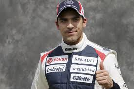

<DOCTYPE html>

<html>

<head>
	<title>Formule 1</title>
	<link href="williams.css" rel="stylesheet"
	style="text/css"
<head>

<h1>Williams</h1>

<body>
Switch to Renault power dramatically boosts competitiveness, with Pastor Maldonado taking <br>
 Williams' first win since 2004 in Spain, but both drivers' form proves inconsistent and<br>
 team rank seventh overall going into summer break.
<p>
 
<a href="http://www.scuderiatororosso.com/en_INT"target="_blank"></a>
<h3>Team</h3>
<ul>



	<li>Full Team Name: Williams F1 Team</li>
	<li>Base: Maranello, Grove, UK</li>
	<li>Team Principal: Frank Williams</li>
	<li>Technical Chief: Mike Coughlan</li>
	<li>Driver:  P Maldonado </li>
	<li>Driver: B Senna </li>
	<li>Chassis: FW34</li>
	<li>Engine: Renault RS27- 2012</li>
	<li>Tyres: Pirelli</li>
	<li>First Season: 1975</li>
	<li>World Championships: 9</li>
	<li>Highest Race Finish: 1 (x114)</li>
	<li>Pole Positions: 127</li>
 </ul>
 
 <p>
 
 <a href="Formule 1 hoofdpagina.html"target="_blank">Terug naar de hoofdpagina</a>
 
 </body>
 
 </html>